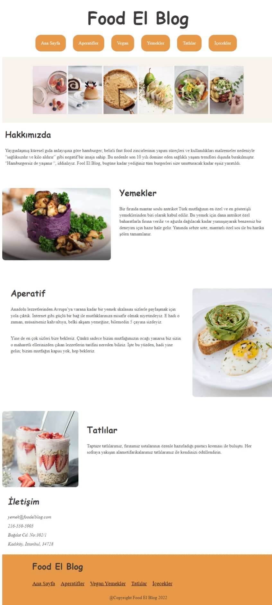

Food El Blog
Web Sitesi
Lezzetli yemeklerinin tanıtımını yapan bir blog
Peri Bacaları Tanıtımı
Web Sitesi
Peri Bacaları'nın büyülü manzarasını ve yapılabilecek etkileyici etkinlikleri keşfedeceğiniz, bilgilendirici bir sayfa
Birdie
Oyun
Bu oyunda engellere çarpmadan kuşu kontrol ederek nilüfer yaprağına ulaşmaya çalışıyorsunuz. Reflekslerinizi test edin!
Fotoğraf Sergisi
Fotoğrafçılık
Çarpıcı fotoğrafların özenle seçilmiş bir koleksiyonu